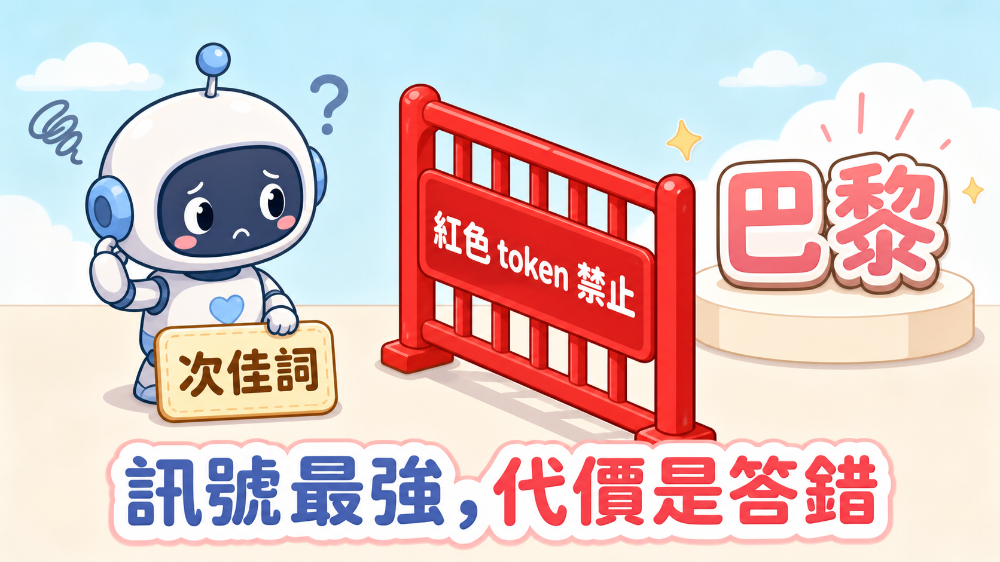
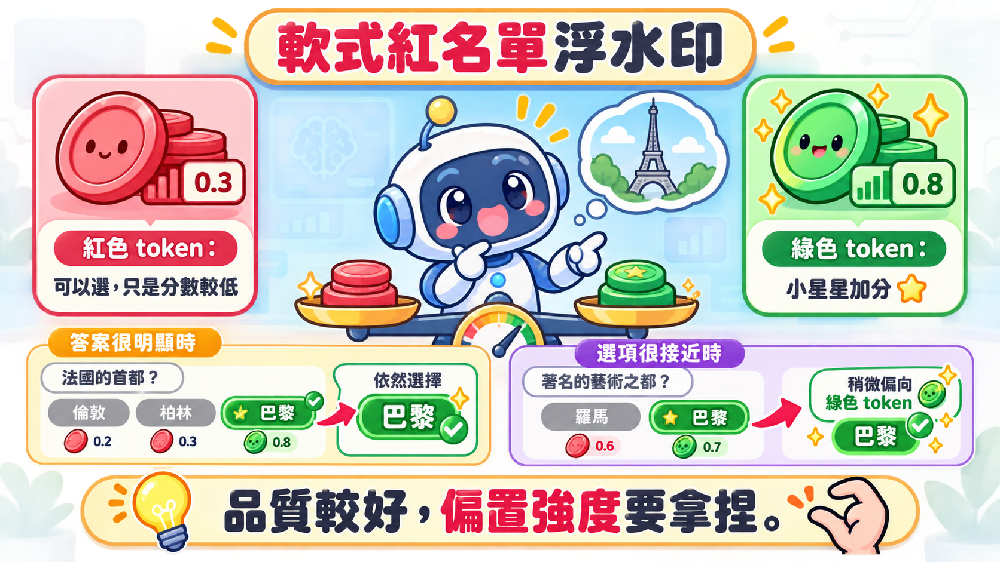
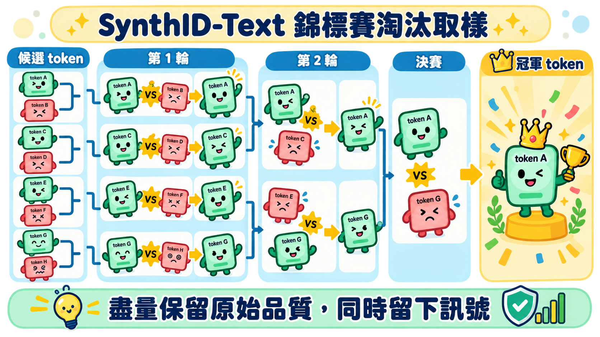

提要：文字浮水印不是看得見的標記，而是可驗證的統計偏差。模型在多個合理候選間反覆做出帶方向性的選擇，整段文字累積後，持有金鑰的偵測器才能辨認出訊號。
浮水印不在文字表面，在生成的岔路裡
這篇整理自 YouTube 頻道 No Hype AI 的一支影片。作者做了一個可以互動測試的浮水印遊樂場，直接把 Qwen-4B 接上不同機制跑給你看，讓紅綠 token 怎麼被選出來這件事不再只是紙上談兵；他也先講明自己的立場——不是浮水印的擁護者，甚至不太希望自己的文字被標記，但認為在下判斷之前，值得先搞懂這套機制到底怎麼運作。
一段 Claude 文字讀起來自然，不表示它沒有被標記。Anthropic 表示，未來 Claude 模型輸出的浮水印不會新增隱藏字元，也不帶可追溯到使用者、組織或個別對話的資訊；它利用的是大量「低風險的選字」。官方說明把這件事講得很準確。
大型語言模型每一步都要替下一個 token 排出機率。當句子是「法國首都是」，選擇空間很小；當句子是「今天的天氣很」，晴朗、多雲、悶熱都能成立。浮水印真正能藏身的地方，就是後者：改選一個同樣說得通的詞，讀者不會察覺，統計上卻會留下痕跡。
三種方法，調的是同一個旋鈕
Kirchenbauer 等人提出的經典做法，是用前文與祕密金鑰，將每一步的 token 詞彙表偽隨機切成紅、綠兩組。偵測器握有同一把金鑰，就能重建分組。差別只在於：系統要多用力偏向綠組？
| 方法 | 怎麼做 | 換來什麼 |
|---|---|---|
| 硬式紅名單 | 紅色 token 直接禁止 | 訊號最強，但可能逼模型說錯話 |
| 軟式紅名單 | 替綠色 token 加分 | 品質較好，但偏置強度要取捨 |
| SynthID-Text | 從原始候選中以錦標賽淘汰 | 盡量保留原始品質，同時累積更多訊號 |
硬式方法的問題在低選擇空間立即露餡：若唯一正確答案剛好在紅組，模型只好繞路。軟式版本不再刪掉紅組，只提高綠組分數；答案很明顯時仍能選正確字，候選接近時才悄悄偏向綠組。


因此偵測不問「是不是全綠」，而問「綠色是否多到不像巧合」。影片提及的單尾 z 檢定可寫成：
G 是觀察到的綠色 token 數，T 是可計分 token 總數，γ 是隨機情況的綠組比例。z 值越高，只代表這段文字越符合這套機率模型，僅止於此。
SynthID-Text：先尊重模型的候選，再留下偏好
影片用單敗錦標賽解釋 Google DeepMind 的 SynthID-Text：先依模型本來的分布抽出多個候選，再兩兩比較；一綠一紅時綠方勝出，同色則隨機決定。每輪換一個種子，最後留下的候選就是輸出 token。
每一個輸出 TOKEN 的簡化流程

影片提到，這正是 Anthropic 對外表示未來將用在 Claude 上的方法——前面 Kirchenbauer 的紅綠名單只是暖身，SynthID-Text 才是接下來會出現在你我對話框裡的那一套：模型在本來就願意給的候選中，留下一段可檢驗的選擇歷史。Google 對外將 SynthID 概括為在生成時調整 token 分數；論文則細分其設定，說明 tournament sampling 如何保留原始分布的品質特性。一個講產品層的效果，一個講演算法層的機制，本來就該分開讀。
這組數字來自 SynthID-Text 論文的實際產品實驗，證明的是「在這個實驗設定下」品質幾乎沒差；換一種模型、換一種提示或換一種長度，答案可能不一樣。
它能幫忙溯源，卻不是 AI 測謊機
Google DeepMind明確指出，較長、更多樣的文本最適合這項技術。文章、劇本、改寫與多版本信件有足夠的安全選字空間；短答、是非題、選擇題或唯一答案的題目沒有。文字一旦被人或另一個模型大幅轉述，原始 token 選擇序列也被換掉，訊號自然會被稀釋。
肉眼看不出「這是 Claude 寫的」，偵測端得握有相應的金鑰或受控服務才行。它提供的是一層機率化的來源證據，能跟平台治理、標示規則和其他驗證方法搭配使用；單獨拿來裁定作者身分，超出了它能承擔的重量。
帶走的事
浮水印看不見，因為它不改變句子的表面；它能被驗證，因為生成時的微小岔路反覆留下同一種偏好。問這項技術時，先釐清誰能驗證、哪些文本有效，以及被改寫後還剩多少訊號。
來源
- No Hype AI：Why You Cannot See a Watermark in AI Text，2026-08-25。
- Anthropic：How Claude’s text watermark works，2026-08-14。
- Kirchenbauer et al.：A Watermark for Large Language Models，2023。
- Dathathri et al.：Scalable watermarking for identifying large language model outputs，Nature，2024。
- Google DeepMind：Watermarking AI-generated text and video with SynthID，2024。